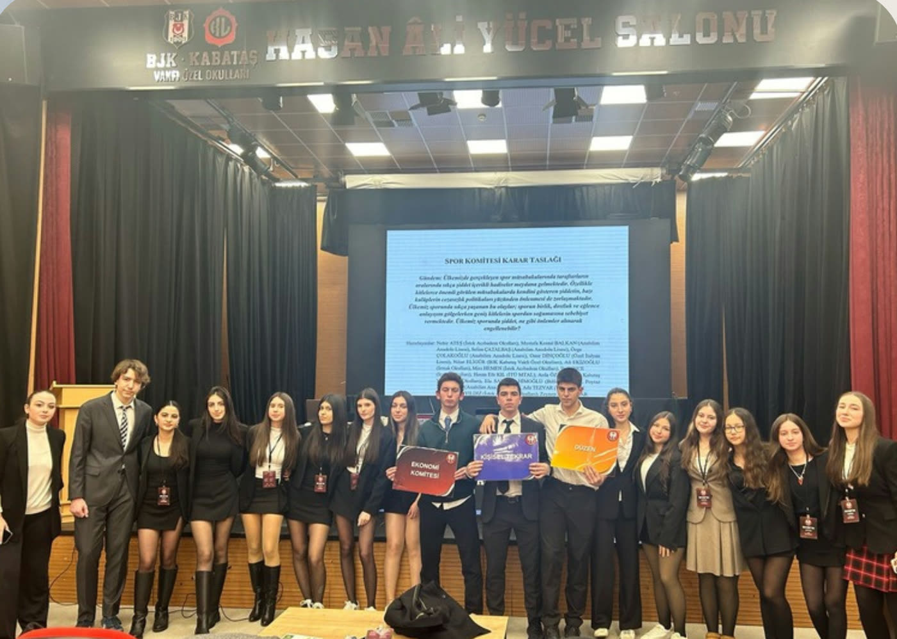
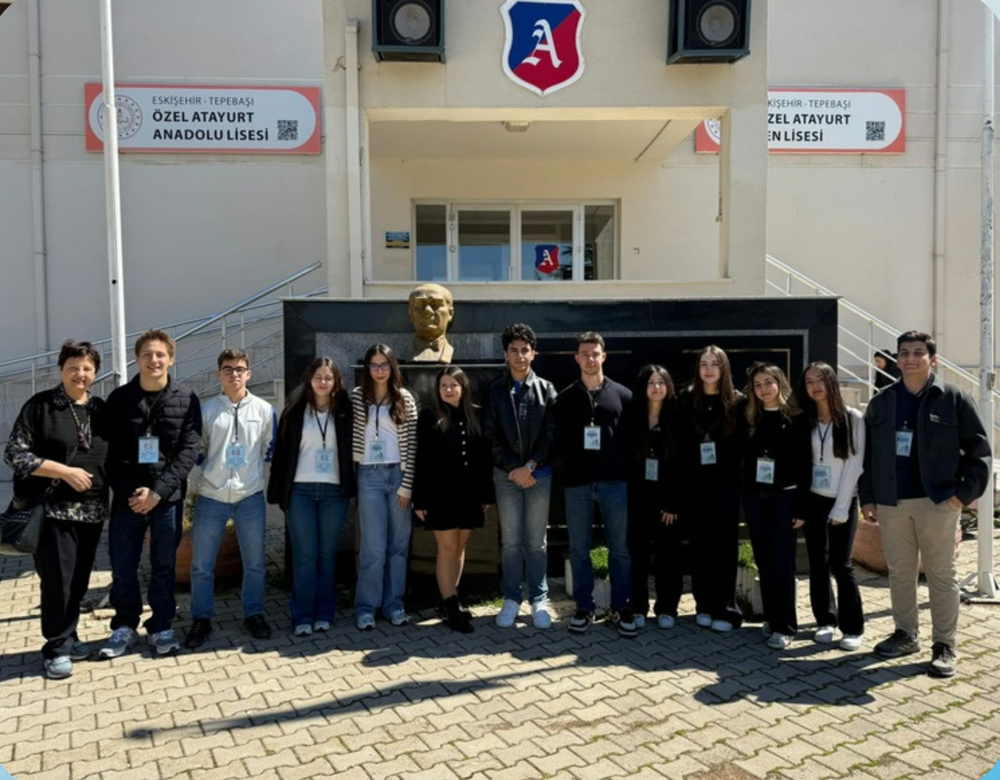
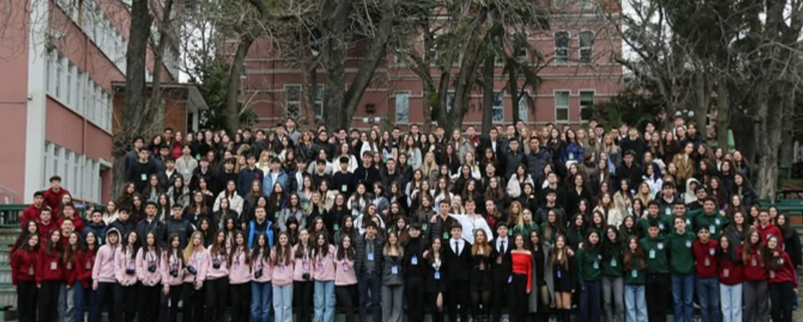

Okul sunumu · Üsküdar Amerikan Lisesi
Avrupa Gençlik Parlamentosu'na kısa bir rehber: konferanslar, roller, başvuru ve ipuçları.
İçerik
01 · EYP nedir?
Siyasi açıdan bağımsız, kâr amacı gütmeyen bir eğitim organizasyonu.
Otuz yılı aşkın bir gençlik ağı
Avrupa ülkesinde aktif


Neden katılmalı?
Farklı şehir ve ülkelerden arkadaşlar
Kimler katılabilir?
Lise öğrencileri ilk konferansına delege olarak başlayabilir.
Konferansın akışı
Komite arkadaşlarınla oyunlarla kaynaşırsın. İyi bir ekip, iyi bir çözüm demek.
Komite verilen güncel sorunu araştırır, tartışır ve birlikte bir çözüm taslağı yazar.
Her komite taslağını sunar; diğer delegeler soru sorar, eleştirir ve sonunda oylar.
Resolution
Komitenin ortak çözüm belgesi. İki kısımdan oluşur.
Sorunu ve nedenlerini tanımlar.
Somut çözüm önerileri sunar.
Genel Kurul'da
Örnek oylama · ardından tüm delegeler oy verir
02 · Okulumuzun konferansı
Üsküdar Amerikan Lisesi Eğitim Konferansı

Nasıl katılırsın?
Okulunuz bir delegasyonla katılabilir.
Komite başkanı, medya gibi rollere. Official ve unofficial deneyimleriniz önemli.
03 · Unofficial konferanslar
01Kimler düzenliyor?
Uzun süredir ulusal forum yapan okulların yanı sıra yeni okullar da başladı.
02Hangi rollere başvurabilirsin?
03Yardım
Başvuru süreçlerinde her zaman bizden yardım alabilirsiniz :)
İpucu. Duyuruları kaçırmamak için okulların konferans Instagram hesaplarını takip edin.
Örnek · Komite başkanı başvurusu
Akademik takımın bir parçası olarak konferansa katılmaktaki motivasyonunuz, konferansa katabilecekleriniz ve akademik kuruldan beklentileriniz nelerdir?
Geçmişte liderlik özelliğinizi kullandığınız aktivitelerden ve organizasyonlardan bahsediniz. Hangi sorunlarla karşılaştınız, nasıl çözümler ürettiniz?
Şu ana kadarki Avrupa Gençlik Parlamentosu deneyimlerinizi, gittiğiniz konferanslar ve edindiğiniz tecrübelerle belirtiniz. (Hangi rolde, hangi komitede görev aldınız? Hangi konular üzerine çözümler ürettiniz?)
04 · Bölüm
Doğrudan EYP Türkiye tarafından düzenlenen konferanslar
04 · Official EYP
Official rolleri · hangi alanda nasıl görev alabilirsin?
Official türleri
Diğer official türleri
Başarılar · okulumuzdan · 1/2
Başarılar · okulumuzdan · 2/2
İspanya · Ekim–Kasım 2025
Euro-Mediterranean Youth Summit
Delege
İtalya · Bahar 2026
Delege
Ankara Ulusal Seçim Konferansı'ndan seçildi
İki sahnede toplam 0 öğrenci
05 · Başvuru & ipuçları
members.eyp.org'da duyurulan konferanslardan birini seç.
İstediğin rol, tecrübe seviyenle örtüşüyor mu?
Members'daki başvuru sorularını özenle yanıtla.
Ve sonucu bekle. Bol şans!
Karşılaştırma
İpuçları · her konferans için
Hazırlığın yerini hiçbir şey tutmaz.
Çalıştığınızı jüriye ve komite başkanınıza mutlaka gösterin.
Tartışmalarda aktif olun: baskın değil, etkili iletişim kurun.
Konferanstan önce mutlaka okuyun, GA'de aktif rol alın.
Komite seçerken bildiğiniz ve sevdiğiniz konuları tercih edin.
İpuçları · official konferansta
İngilizce konuşmaya özen gösterin
Özellikle burada çalıştığınızı gösterin
Söz kesmeyin, çözüm odaklı olun, iyi iletişim kurun artı puan!
Jüriden geri bildirim alın
Çok özel bir durum olmadıkça unofficial'lardan bahsetmeyin
Öneri · bir dönemlik plan
Toplam: 1 dönem · 8–10 hafta
06 · Soru-cevap
Başvurularda yardım için bize her zaman ulaşabilirsiniz.
Ata Umut H. · Ada Sarp K. · Duru G. · Doruk G.